The safety-first database workspace
for PostgreSQL and SQLite.
Local-first. Open source. Built for confidence. Production is treated as production, passwords stay in your OS keychain, and there is no account or hosted service between you and your data.

Beta software. Releases are pre-releases and the installers are not yet signed by Apple or Microsoft, so your OS warns once on first launch. Every release carries SHA-256 checksums and minisign signatures you can check yourself — see Download.
Built around the mistake
you only make once.
Two engines, one safety model, and a clear answer to "where does my data go?".
Production-aware
The worst statements stop and ask on any connection. Tag it prod or staging and more of them ask, and the worst ones make you type the table name.
Enforced, not hoped
Read-only profiles are set on the PostgreSQL session and re-checked before every statement; SQLite opens the file read-only.
Local-first
No account and no telemetry. Passwords in the OS keychain. Prod query text never written to history.
AI on your terms
Your own Anthropic key or a local Ollama model. It is never sent result rows and never runs anything by itself.
Everything for the daily loop.
Nothing you have to babysit.
Write, run, read the result, and keep going — with the pages you reach for around it.

Editor and results
- Schema-aware autocomplete, format, find and replace
- Run and cancel, transactions owned by a tab
- Streamed, virtualized grid; stops at 20,000 rows
- Row editing with a review of the exact
UPDATE
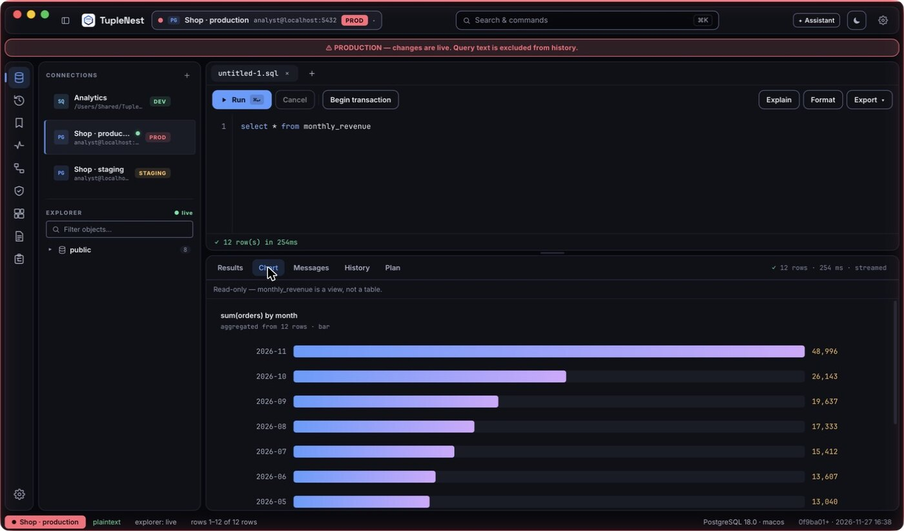
Charts and plans
- Draw a result as a chart in one tab
- Explain with a plan view that finds the costly node
- Candidate
CREATE INDEXstatements to copy - Export to CSV, JSON or Markdown
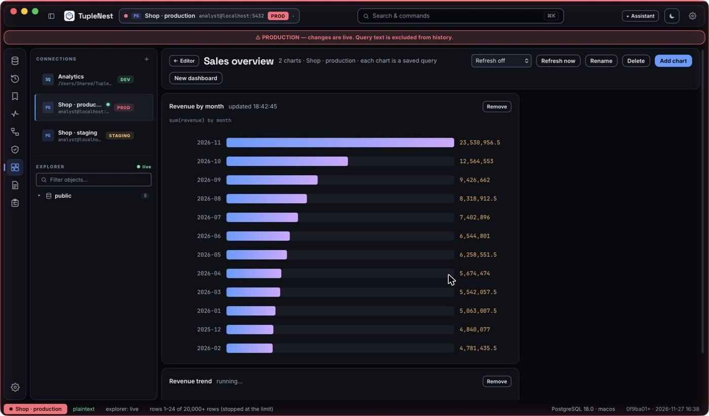
Dashboards and notebooks
- Saved queries pinned as bar, line or number charts
- Refresh on open or every 1, 5 or 15 minutes
- Notebooks: text, SQL and chart cells
- A cell runs only on its own Run
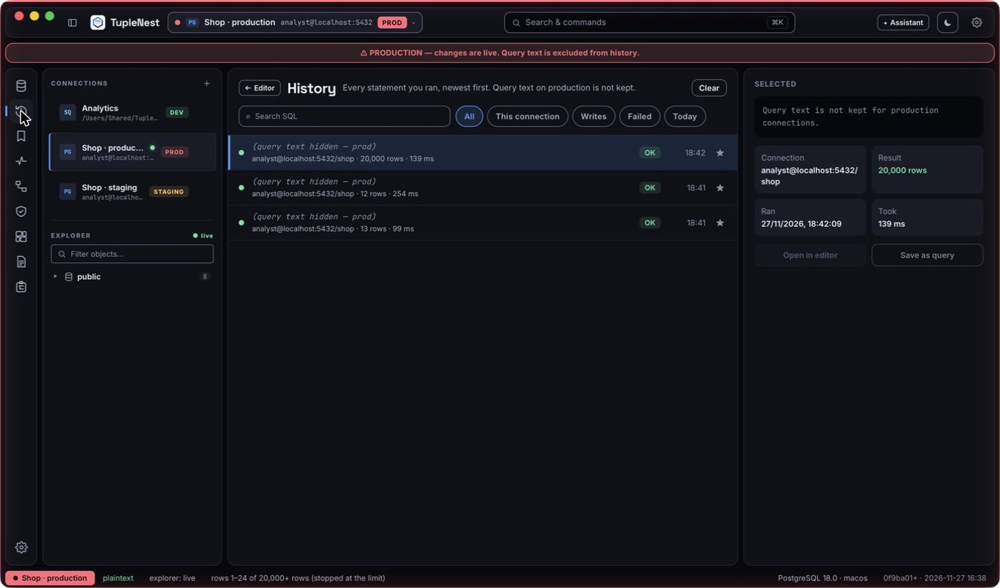
History and saved queries
- Search, filters, the sender of each statement
- Prod query text is never stored
- Saved queries with tags, reusable snippets
- Command palette on ⌘K
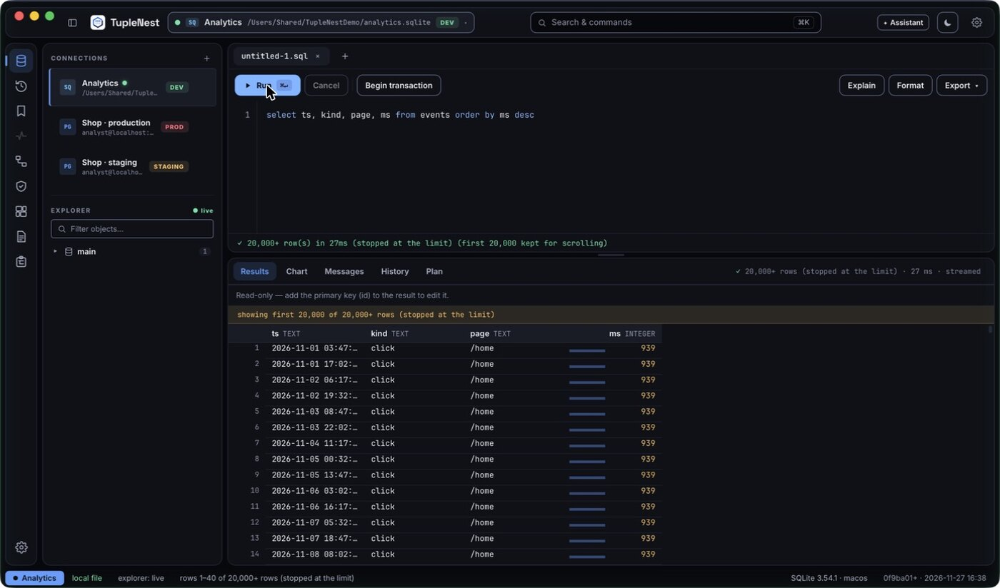
SQLite files
- A profile is a file path
- Read-only enforced by SQLite itself
- Explorer, ER diagram, row editing by key or rowid
- Same guard, tags and audit log as PostgreSQL
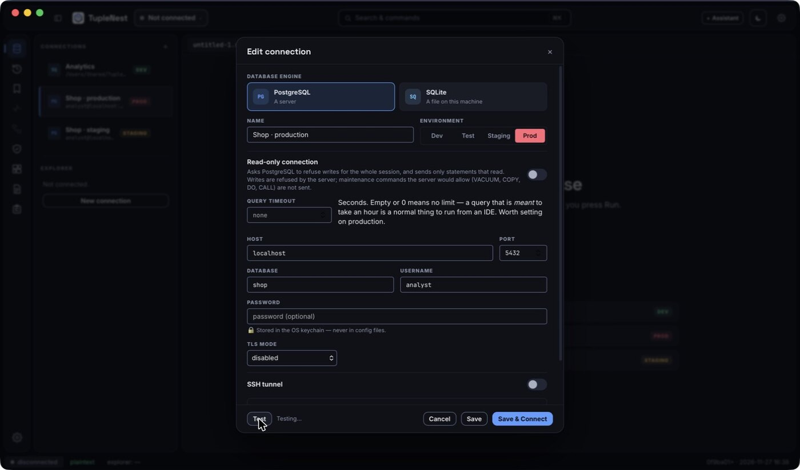
Operate PostgreSQL
- Backup and restore with your own
pg_dump - Users and roles: who can write what
- Server monitor, ER diagram, schema diff
- TLS
verify-fullby default, SSH tunnels

Production safety is a workflow, not a warning colour.
Each protection names what actually enforces it.
- Read-only set on the PostgreSQL session and re-checked before every statement; SQLite files opened read-only
- Statement guard on prod and staging: no-
WHEREwrites,DROP,TRUNCATE,ALTERand more ask first - Type the name for an unbounded write, a
DROPor aTRUNCATEon prod and staging - Audit before run on prod and staging: if the audit row can't be written, the statement isn't sent
- No prod SQL in history, and a 20,000-row stop at the limit
- TLS
verify-fullby default; SSH host keys verified, passphrase keys supported
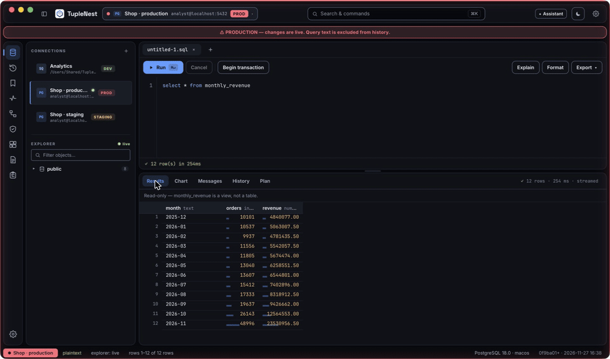
Explain, fix and write SQL — without sending your rows.
Use Claude with your own Anthropic API key, or a local model through Ollama. Requests are made by the Rust core; the window never holds your key.
- Sent: your message, the editor's SQL, error text with row-quoting lines removed, schema names and types
- Never sent: result rows, history, the connection's host, user or password
- Ollama cloud models are labelled and refused until you opt in
- Nothing runs by itself: suggestions go through Run, the guard and the audit log
Let your AI tools in — one connection at a time.
Claude Desktop, Claude Code or Cursor can query your saved connections through TupleNest's rules. The app's own binary serves MCP on stdio: tuplenest-desktop mcp.
The default for every connection. It is not listed, and naming it gets the same answer as a name that does not exist.
A server-enforced read-only session plus the read allowlist. The most prod and staging can ever get.
Writes run, but anything the guard would ask about is refused with the reason — no one is there to confirm.
Claude Desktop / Cursor
// claude_desktop_config.json or ~/.cursor/mcp.json { "mcpServers": { "tuplenest": { "command": "/Applications/TupleNest.app/Contents/MacOS/tuplenest-desktop", "args": ["mcp"] } } }
Claude Code
claude mcp add tuplenest -- \
"/Applications/TupleNest.app/Contents/MacOS/tuplenest-desktop" mcp
MCP · <client>. What a query returns goes to that AI tool.Every destination, in one table.
The complete list lives in PRIVACY.md.
| Path | Where | When |
|---|---|---|
| Your databases | The hosts you configure, directly or through your SSH tunnel | When you connect and run |
| Assistant | api.anthropic.com with your key, or your Ollama URL (local by default). No result rows | Only when you send, Explain, Fix or Test |
| MCP server | The AI tool that started it, over stdio — including the rows its queries return | Only for connections you turned on |
| Update check | github.com, an unauthenticated request with no identifier. GitHub sees your IP address | Once at startup |
| Telemetry | Nowhere. The setting is off and no code sends anything | Never |
A closer look.
Captured from the app, in the dark and light themes.
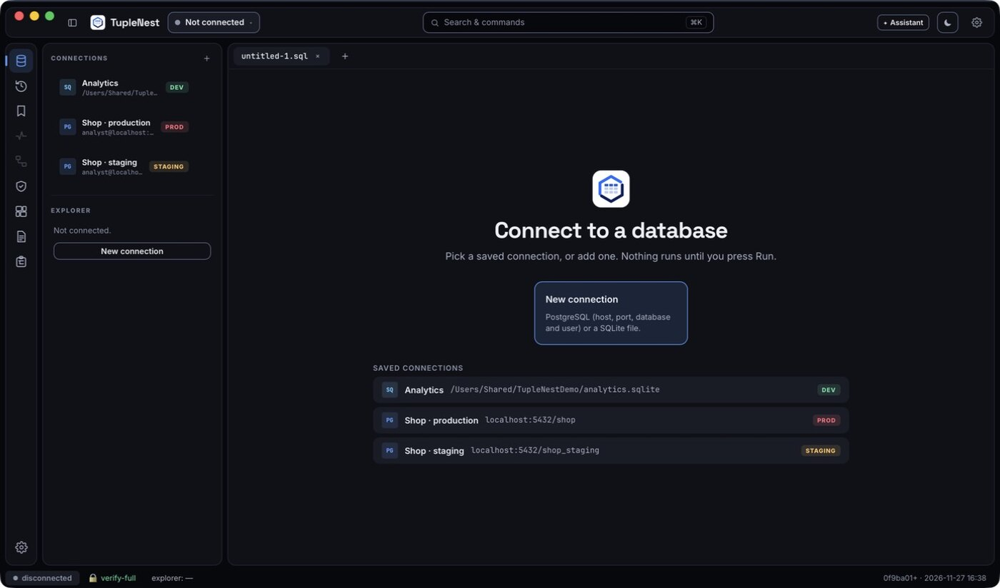
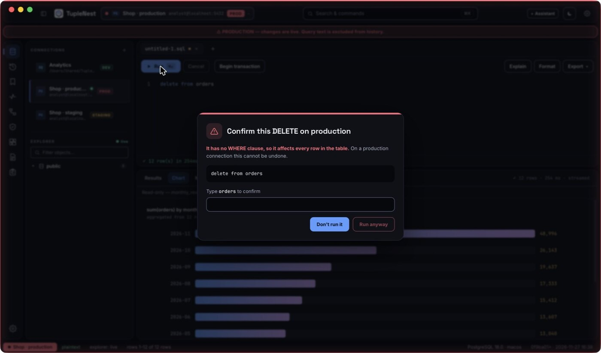
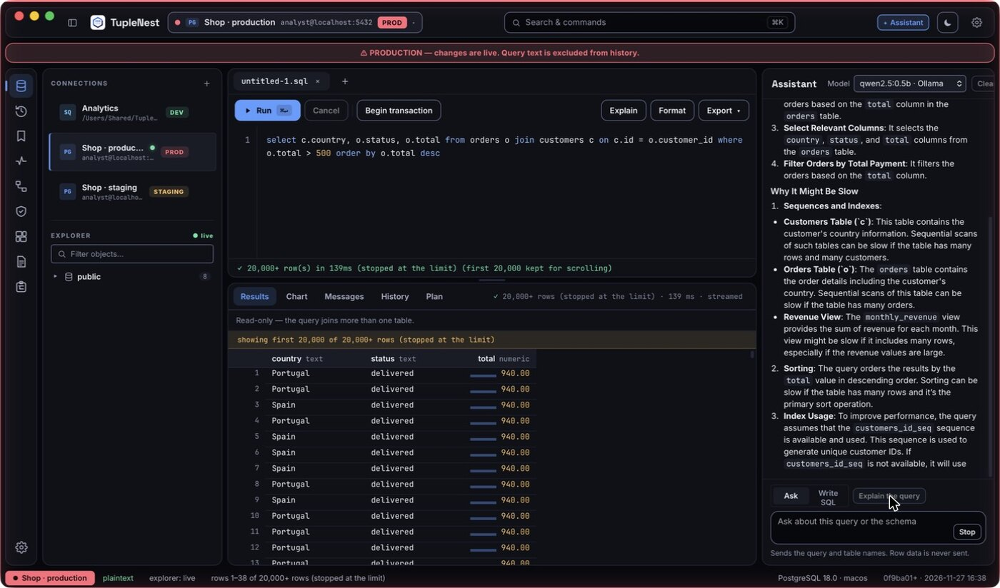
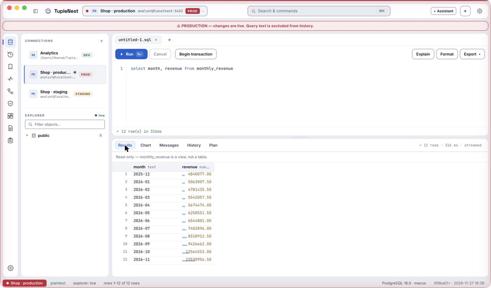
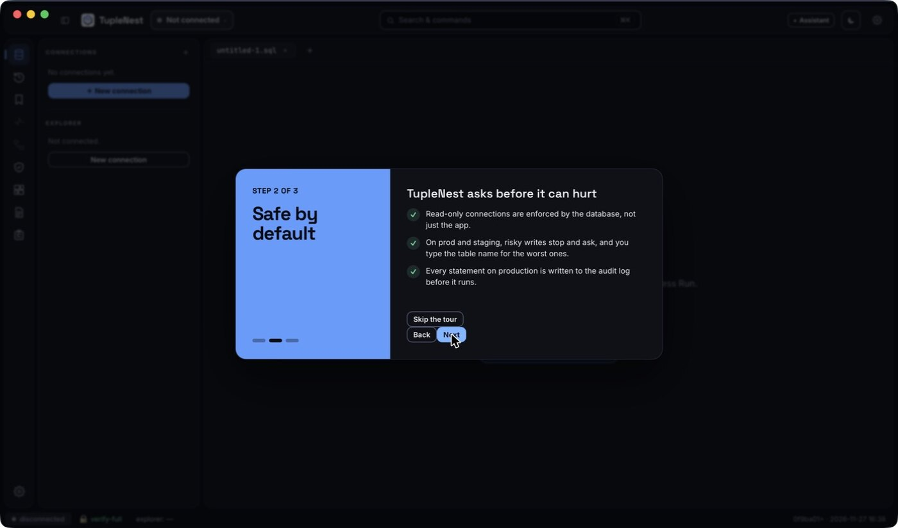
Frequently asked questions
PostgreSQL 13+ and SQLite 3. TupleNest is currently focused on these two.
It is MIT-licensed and free, with no account, sign-in or hosted service.
No. The telemetry setting is off and no code sends anything. The app talks to your databases, GitHub once at startup for an update check, and the assistant's model only if you set one up and ask it something.
The assistant never sends result rows: only your question, the editor's SQL, error text with row-quoting lines removed, and schema names and types. The MCP server is different by design: an AI tool you connect gets what its queries return, which is why every connection starts Off and prod and staging are read-only at most.
In the OS keychain — macOS Keychain, Windows Credential Manager or the Linux Secret Service. The app stores only an opaque reference, and the window never receives the password.
It makes it much harder: server-enforced read-only profiles, the statement guard, type-the-name confirmations and an audit log on prod and staging. The hard boundary is still a database role without write privileges.
The installers are not yet signed with an Apple Developer ID or a Windows code-signing certificate. The Download page has the click-path for each OS and how to check a file yourself.
Yes: Rust stable (via rustup), Node 22+, and the Tauri prerequisites for your OS. See the README.